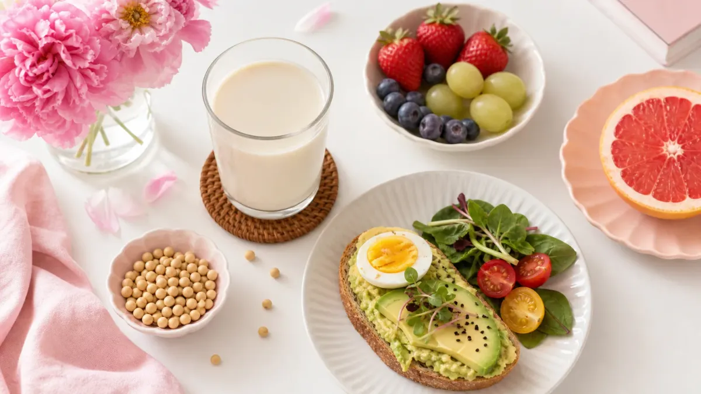

「豆乳を飲むとダイエットに効果があるって本当？」と気になっている方へ。
結論から言うと、豆乳は低カロリー・高たんぱくで、食事に上手に取り入れると満足感を得やすい飲み物です。
この記事では、豆乳ダイエットの具体的な飲み方・タイミング・1週間の取り入れ方をわかりやすく解説します。
豆乳ダイエットとは？まず基本を確認
豆乳ダイエットとは、食事の一部や間食を豆乳に置き換えたり、食前に飲んで食べすぎを防いだりする方法です。
特別な制限食ではなく、普段の食生活に豆乳をプラスするだけなので、初心者でも取り組みやすいのが特徴です。
豆乳の主な栄養成分（無調整豆乳200ml あたりの目安）
- カロリー：約88kcal
- たんぱく質：約7.2g
- 脂質：約4.0g
- 糖質：約2.9g
- 大豆イソフラボン：約50mg
牛乳（200ml・約134kcal）と比べてカロリーが低く、植物性たんぱく質が豊富です。
豆乳ダイエットで期待できる3つのポイント
① 食前に飲むと満腹感を得やすい
食事の10〜15分前に200mlの豆乳を飲むと、たんぱく質と食物繊維の働きで満腹感が出やすくなります。食べすぎ防止のサポートとして活用できます。
② 植物性たんぱく質で筋肉量をキープしやすい
ダイエット中は筋肉が落ちやすいですが、豆乳のたんぱく質を補うことで筋肉量の維持をサポートします。1日のたんぱく質量が不足しがちな女性に特におすすめです。
③ 大豆イソフラボンで女性ホルモンをサポート
大豆イソフラボンは女性ホルモン（エストロゲン）に似た働きをすると言われています。ホルモンバランスが乱れやすい時期のダイエットにも取り入れやすい食品です。
※ 大豆イソフラボンの摂りすぎには注意が必要です。食品安全委員会の目安では、サプリメントからの摂取上限は1日30mgとされています。豆乳などの食品からは過度に心配する必要はありませんが、1日の摂取量の目安（200〜400ml程度）を守りましょう。
🥛 豆乳ダイエット｜1日の飲み方プラン
✨ タイミング別・おすすめの飲み方 4パターン
7:00〜8:00
200mlを朝食と一緒に。たんぱく質補給で代謝をサポート
昼・夜の前
食事の15分前に飲んで満腹感を先取り。食べすぎ防止に
15:00前後
お菓子の代わりに200ml。甘い調整豆乳でも満足感◎
週2〜3回
夕食の主食を豆乳スープに置き換えてカロリーオフ
400ml
飲みすぎに注意。無調整豆乳なら200ml×1〜2杯が目安。調整豆乳はカロリーが高めなので1杯まで。
大豆アレルギーの方は摂取を控えてください。甲状腺に疾患がある方は医師に相談を。豆乳だけに頼らず、バランスの良い食事を基本にしましょう。
1週間の豆乳ダイエット取り入れ方スケジュール
いきなり置き換えるのではなく、3ステップで段階的に取り入れるのがおすすめです。
STEP 1（1〜2日目）：まず朝に1杯追加する
朝食に無調整豆乳200mlをプラスするだけ。味に慣れることが最初の目標です。苦手な場合は調整豆乳やきな粉を加えてもOK。
STEP 2（3〜4日目）：食前に飲む習慣をつける
昼食か夕食の15分前に200mlを飲みます。食事量が自然と落ち着いてくる人が多いです。
STEP 3（5〜7日目）：間食を豆乳に置き換える
15時ごろのお菓子を豆乳200mlに変えます。1週間続けると、1日あたり約100〜200kcalのカロリーオフが期待できます。
食事全体のバランスも大切です。ダイエット献立1週間プランの記事も参考に、食事と豆乳を組み合わせて取り組んでみてください。
豆乳の種類別・選び方のポイント
無調整豆乳
大豆固形分8%以上。カロリーが低く、糖質も少なめ。ダイエット目的なら無調整豆乳が最もおすすめです。独特の豆臭さが苦手な方は、温めると飲みやすくなります。
調整豆乳
砂糖や塩などで飲みやすく調整されたもの。カロリーは無調整より高め（200mlで約120〜130kcal）。豆乳を初めて飲む方の入門として活用するのがおすすめです。
豆乳飲料
フルーツ・抹茶・コーヒーなどのフレーバーが豊富。大豆固形分が低く、糖質・カロリーが高いものも多いため、ダイエット中は飲みすぎに注意しましょう。
豆乳を使った簡単ダイエットレシピ3選
① 豆乳みそスープ（約80kcal）
無調整豆乳150ml＋だし100ml＋みそ小さじ1。電子レンジで2分温めるだけ。夕食の置き換えや食前スープに最適です。
② 豆乳バナナスムージー（約150kcal）
無調整豆乳200ml＋バナナ半本をミキサーで混ぜるだけ。朝食代わりや間食に。たんぱく質と糖質のバランスが良く、運動前にもおすすめです。
③ 豆乳きな粉ドリンク（約110kcal）
無調整豆乳200ml＋きな粉大さじ1。大豆イソフラボンとたんぱく質をダブルで補給できます。ほんのり甘みがあり、調整豆乳より飲みやすいと感じる方も多いです。
たんぱく質をしっかり摂りたい方は、鶏胸肉の人気ヘルシーレシピと組み合わせるとバランスアップできます。
豆乳ダイエットの注意点
- ✅ 1日の摂取量は200〜400ml（飲みすぎると大豆イソフラボンの過剰摂取になる場合があります）
- ✅ 大豆アレルギーがある方は摂取を控えてください
- ✅ 豆乳だけで食事を全置き換えするのは栄養不足につながるためNG
- ✅ 甲状腺の疾患がある方は医師に相談してから取り入れましょう
- ✅ 調整豆乳は糖質が高めなので、飲みすぎに注意
よくある質問（FAQ）
Q. 豆乳はいつ飲むのが一番効果的ですか？
A. 食事の10〜15分前に200mlを飲むのがおすすめです。たんぱく質と食物繊維が満腹感を高め、食事量を自然に抑えやすくなります。朝食と一緒に飲む習慣も、1日のたんぱく質補給として効果的です。まずは1食の食前から始めてみましょう。
Q. 無調整豆乳と調整豆乳、どちらを選べばいいですか？
A. ダイエット目的なら無調整豆乳がおすすめです。カロリー・糖質ともに低く、大豆の栄養をそのまま摂れます。ただし味が苦手な場合は、まず調整豆乳から始めて徐々に無調整に移行するのも一つの方法です。無理なく続けることが大切です。
Q. 豆乳ダイエットはどのくらいで変化を感じますか？
A. 個人差がありますが、1週間続けると食事量が落ち着いてきたと感じる方が多いです。体重の変化よりも、食べすぎが減った・間食が減ったという生活習慣の変化を先に実感するケースが多いです。焦らず2〜4週間を目安に続けてみましょう。
まとめ：豆乳ダイエットは「置き換え」より「プラス」から始めよう
豆乳ダイエットのポイントをまとめます。
- まず朝食に無調整豆乳200mlをプラスする（1〜2日目）
- 食事の15分前に飲む習慣をつける（3〜4日目）
- 間食を豆乳に置き換える（5〜7日目）
- 1日の摂取量は200〜400mlを守る
- 食事全体のバランスを崩さないことが大切
豆乳は手軽に取り入れられる食品ですが、それだけに頼るのではなく、バランスの良い食事の一部として活用するのが長続きのコツです。
食事全体の見直しも一緒に行いたい方は、ダイエット習慣に関する記事一覧もぜひ参考にしてみてください。